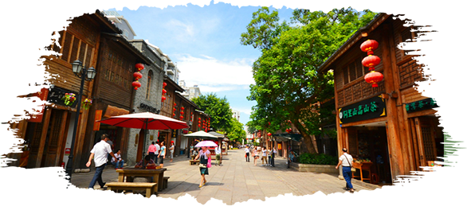
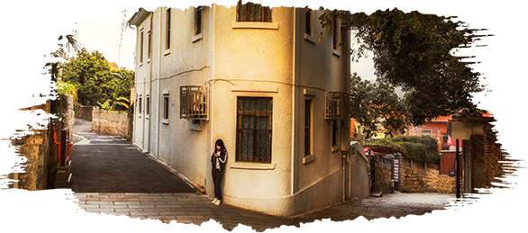
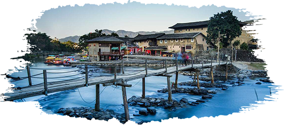
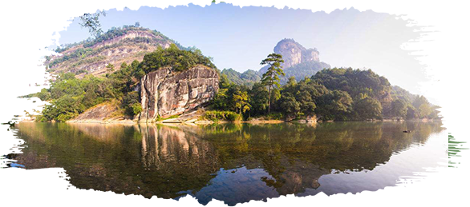

| Prefect Travrling | 首页 | 地区介绍 | 景区介绍 | ||||||||
|
|||||||||||
| —出发遇见福建— | |
| Set out to meet Fujian | |
福州 福建的省会城市,在时间的长河里留下了浓墨重彩的印记。当你踏上三坊七巷的石板路,驻足于流水奔腾的闽江边,漫步在绿茵蔽日的国家森林公园,穿梭在风景灵秀的鼓山和鼓岭找寻着马尾船政和罗星塔的动人故事,你都会被这座城市的底藴所惊叹。
|
 |
|  | 厦门 别称"鹭岛",是许多旅游者脑海中美好深刻的记忆。中山路街景繁华美食扎堆,鼓浪屿枝独秀情调颇浓,厦门大学兼容中西秀甲方,环岛路空气清新游人如织。都说小城故事多,请你在这里静享时光可好。 |
漳州 闻名的“鱼米花果之乡”,盛产各种水果及海珍品。这里还有灵山碧水的南靖云水谣,以及中国为数不过的滨海火山地质地貌风景旅游区,热情的当地人等着你的到来。 |
 |
|  | 南平 以武夷山脉为主体的闽北大山带,坐拥瑰丽的丹霞地貌和独特的喀斯特地貌景观。都说"北有泰岳、南有武夷",在南平的武夷山,峰奇石峻,山清水秀,人杰地灵,闻名遐迩,无愧于世界自然与文化遗产的风采，登高远眺闻名。 |
PREFECT TRAVLING |
 |
地址：江苏省苏州市张家港市福新路1号 电话：13601475824 邮箱：130638633@qq.com QQ： 1370638633 |